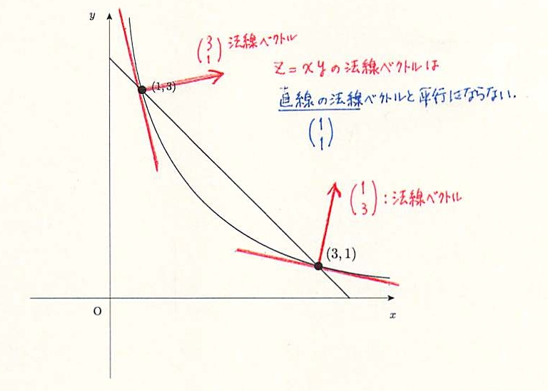

経済学で出る数学
ワークブックでじっくり攻める：問7.21解答例
【解答 7.21】
-
ラグランジュ乗数法の解を示す．
- 【Step1】ラグランジュ関数を作ると，
$
{\cal{L}}(x,y,\lambda)=xy+\lambda\left(4-x-y\right).
$
- 【Step2】 各変数で偏微分してイコールゼロとおくと，
\[
\left\{
\begin{array}{lll}
0=\displaystyle \frac{\partial\cal{L}}{\partial x}
=y-4{\lambda}
&
\rightarrow y={4{\lambda}}
&\qquad (1)\\[2ex]
0=\displaystyle \frac{\partial\cal{L}}{y}
=x-4{\lambda}y
&
\rightarrow x={4{\lambda}}
&\qquad (2)\\[2ex]
0=4-x-y& & \qquad (3)
\end{array}
\right.
\]
- 【Step3】 あとは工夫して解く．
- $(1), (2)$ を $(3)$ に代入すると，
$4-{4{\lambda}}-{4{\lambda}}=0$,
ゆえに $\lambda =\dfrac{1}{2}$．
- $(1)$ から，$y=2$
- $(2)$ から，$x=2$
ゆえに最適解は，$(x,y)=\left(2, 2\right)$ であり，連立方程式
\[
\left\{
\begin{align}
x+4&=4\\
y&=\dfrac{3}{x}
\end{align}
\right.
\]
の解，$(1,3), (3,1)$ のいずれとも異なる．
-
図説は下図の通り．最適解になるためには，
$y=\dfrac{3}{x} \Leftrightarrow xy=3$ と見れば，効用関数 $z=xy$ の値が，まだ大きくなって，右上方に移動しないといけない．

【問 7.21 終わり】
解答例一覧へ
（2015.12.18）修正